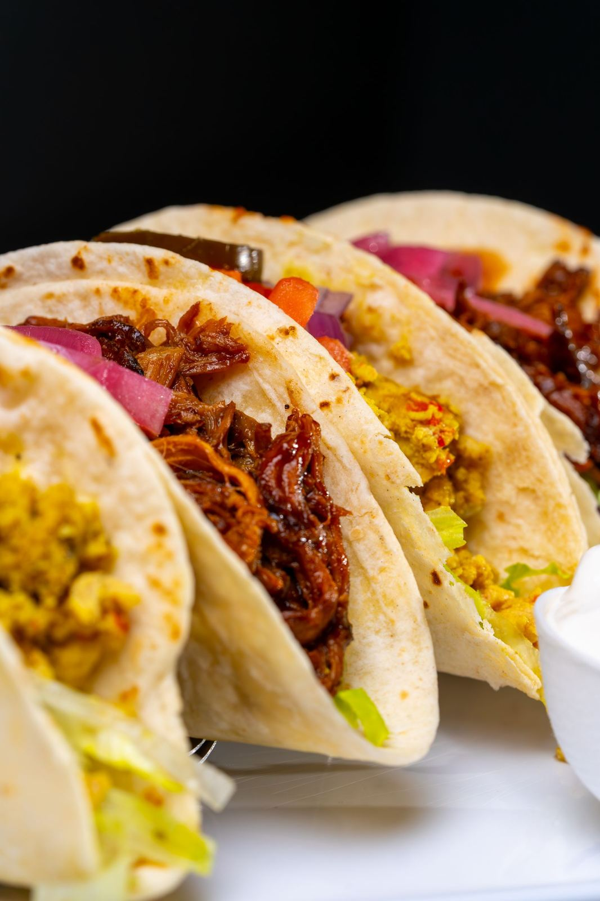
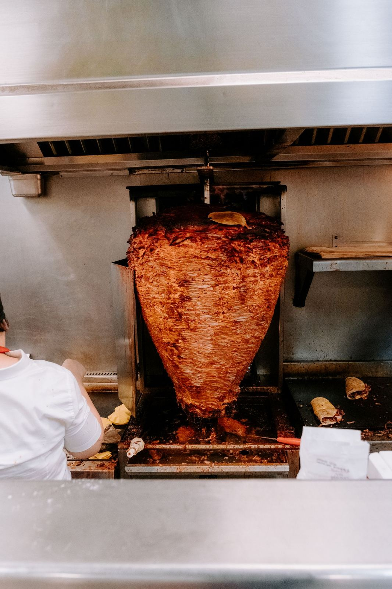
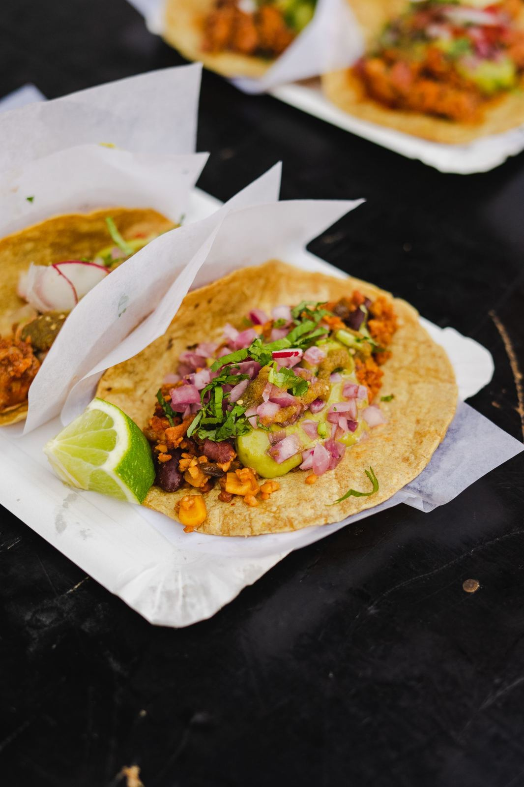
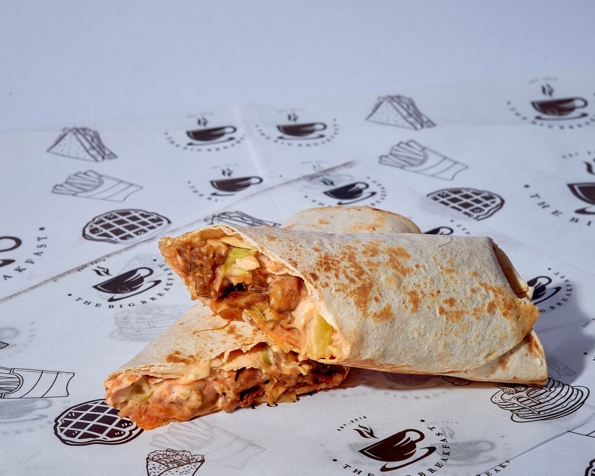
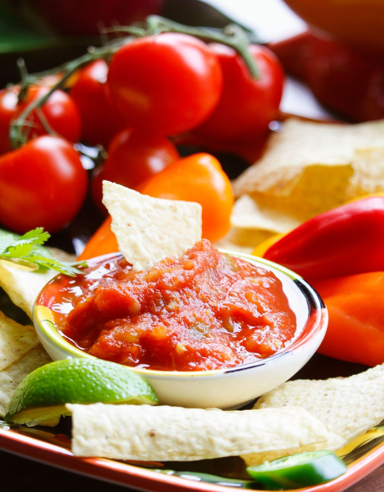

Tacos done right, served fast
Vazquez Taco Shop is a family-owned Mexican restaurant on East 4th Street in Pueblo. No frills, no fuss: tacos, burritos, tortas, and combo plates, made to order at the take-out counter.


A neighborhood shop, run by family
Vazquez keeps it simple. You order at the counter, the kitchen cooks it fresh, and you take it home hot. That is the whole formula, and it works.
The menu covers the classics: tacos with carne asada, adobada, fish, or carnitas; burritos including a breakfast burrito with bacon, egg, cheese, and potato; tortas; and combo plates with rice and beans.
Red and green salsas come with everything. Carne asada fries and enchiladas round out the plates.
The short list
What to order when you walk up to the counter.

Street tacos
Carne asada, adobada, fish, or carnitas. Lime and onions on the side, the way they should be.

Burritos
Carne asada, carnitas, or breakfast with bacon, egg, cheese, and potato.

Red and green salsas
Made in-house. Ask which one is hotter before you commit.